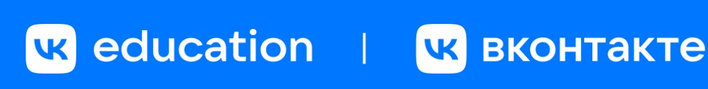
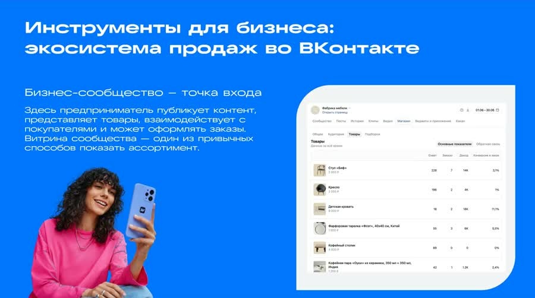

Бизнесы с активным каталогом
Обе доли рассчитаны от одной группы за сентябрь. Данные не показывают, на каком шаге каждый продавец потерял заказ.


Как помочь бизнес-сообществам ВКонтакте
продавать своей аудитории
Обе доли рассчитаны от одной группы за сентябрь. Данные не показывают, на каком шаге каждый продавец потерял заказ.

Кабинет помогает выбрать готовый товар, опубликовать его и проверить, выполнен ли заказ.
Даже при сходном размере аудитории магазины различаются активностью и ассортиментом. Вклад нового сценария проверим случайным распределением бизнесов.
Бизнес уже присутствует в VK. Стоимость и результат следующего действия можно измерить на уровне одного сообщества.
У VK есть контекст публикации и диалога с покупателем. Проверяем, помогает ли он довести интерес до оформленного заказа.
Тёплая глазурь, 300 мл. Можно забрать в мастерской.
Макеты предложения команды. На каждом шаге видны товар, следующее действие и результат для другой стороны.
Новичку предлагаем заполнить одну карточку. Опытный продавец выбирает готовую.
В публикации или клипе товар остаётся связан с историей, которая вызвала интерес.
Покупатель видит получение до заказа. Продавец подтверждает выдачу или причину отмены.
В Маркете покупатель снова находит сохранённый товар и знакомый магазин.
Сравним возвраты и заказы теста с контролем. В «Другое» попало 40,2% открытий, поэтому отдельно проверим разметку источников.
6 000 активных бизнесов, 20% увеличивают рекламные расходы на 1 500 ₽ в месяц. Выход на масштаб занимает полгода.
При базовых допущениях операционная безубыточность наступает при 2 963 активных бизнесах. Реальные расходы и дополнительный рекламный доход измеряем в пилоте.
Интервью, проверка сегмента и определения заказа
Прототип кабинета и проверка событий аналитики
50–100 продавцов: проверяем весь путь до выдачи
Случайное распределение и 30 дней наблюдения
Группы сравниваем по назначению в тест. Контролируем отмены, жалобы, время исполнения и перенос заказов между каналами.
Расчёт для цели +5 п.п. к доле продающих. Мощность для числа заказов считаем отдельно по дисперсии до запуска. Масштабируем при росте заказов и приемлемой экономике.
| Источник | Единица наблюдения | Для чего используем | Ограничение |
|---|---|---|---|
| Бизнесы | 9 754 бизнес-ID | Сегментация и настройки | Выборка, без истории изменений |
| Итоги | Метрика за месяц | Общая воронка | Разные поверхности и способы покупки |
| По дням | 30 дней сентября | Динамика и сверка итогов | Уникальных нельзя суммировать |
| Источники | Источник открытия | Выбор точки входа | 40,2% трафика VK в «Другое» |
| Категории | Товарная категория | Различия спроса | Заказы не сходятся с итогом |
| Покупатели | Пол и возраст | Профиль видимой аудитории | Подавление малых групп |
| Регионы | Регион | География и пропуски | 36,7% покупателей партнёра без региона |
| Проверка | Наблюдение | Как учитываем |
|---|---|---|
| Заказы VK по категориям | 435 285 против 413 740 в итогах | Не складываем категории в единый итог |
| Заказы партнёра по категориям | 4 557 517 против 4 927 525 | Не используем как полную декомпозицию |
| Заказы при выключенном чекауте | 14 бизнесов | Снимок настроек не объясняет историю |
| Заказы при выключенной оплате | 268 бизнесов | Различаем заказ и оплату |
| GMV партнёра по дням | На 1 ₽ меньше месячного итога | Сохраняем расхождение в расчётах |
| Покупатели и регионы | Сходятся с отдельными строками видимых групп | Пропуски не заменяем нулями |
| Подписчики | Контент | Бизнесов | С заказами | Доля |
|---|---|---|---|---|
| до 1 тыс. | Нет | 1648 | 39 | 2.4% |
| до 1 тыс. | Есть | 622 | 29 | 4.7% |
| 1–10 тыс. | Нет | 1059 | 66 | 6.2% |
| 1–10 тыс. | Есть | 396 | 84 | 21.2% |
| 10–100 тыс. | Нет | 132 | 25 | 18.9% |
| 10–100 тыс. | Есть | 97 | 37 | 38.1% |
| 100 тыс.+ | Нет | 5 | 4 | 80.0% |
| 100 тыс.+ | Есть | 2 | 1 | 50.0% |
| Показатель | Значение | Интерпретация |
|---|---|---|
| Медиана заказов на бизнес | 0 | Большинство не имеет заказов |
| Бизнесы с заказами | 298 из 9 754 | 3,1% всей выборки |
| Всего заказов в листе бизнесов | 3 478 | Не равно месячному итогу Маркета |
| Источник | Открытия карточек VK | Доля |
|---|---|---|
| Другое | 77 753 037 | 40.18% |
| Витрина магазина | 75 604 323 | 39.07% |
| Лента | 18 795 696 | 9.71% |
| Клипы | 17 239 066 | 8.91% |
| Поиск | 3 707 521 | 1.92% |
| Главная Маркета Вконтакте | 412 818 | 0.21% |
| Гипотеза | Основание | Следующая проверка |
|---|---|---|
| Активация продаж важнее новых подключений | 91,9% чекаут / 7,2% продающих | Эксперимент на бизнесах с каталогом |
| Контент помогает довести до покупки | Разница внутри диапазонов аудитории | Контроль темы, активности и пилот |
| Настройка требует сопровождения | Разрыв подключения и продажи | Интервью и тестовая покупка |
| Маркет помогает вернуться | 0,21% входа с главной | Тест сохранений и повторных заказов |
| Продавец платит за доказанную ценность | Рекламные расходы есть в датасете | Изменение общего бюджета относительно контроля |
Каталог, активность товара, соответствие аудитории.
Условия получения, настройки, ошибки оформления.
Проверяем карточку и тестовую покупку.
Публикация, распространение, аудитория.
Цена, доверие, контекст, условия.
Проверяем события и причины отказов.
Статусы, исполнение, обратная связь.
Сохранение товара и поиск магазина.
Проверяем исполнение и повторные заказы.
| Вариант | Бюджет, допущение | Плановый срок | Риск |
|---|---|---|---|
| Привлечение новых продавцов | 3–6 млн ₽ | 8–12 недель | Стоимость продающего бизнеса |
| Широкая витрина | 6–12 млн ₽ | 12–20 недель | Недостаточный спрос и каннибализация |
| Связки с авторами | 4–8 млн ₽ | 8–12 недель | Внешнее завершение заказа |
| Следующий заказ | 4,8 млн ₽ | 12 недель до чтения полного теста* | Причина низких продаж не подтверждена |
| Субсидии | 2–5 млн ₽ | 4–6 недель | Отток после прекращения скидки |
| Канал | Как находят товар | Что делает продавец | Что применимо в VK |
|---|---|---|---|
| Ozon, маркетплейс | Поиск товара и переход в магазин | Собирает ассортимент на витрине | Понятные условия и каталог для готового спроса |
| leboncoin, объявления | Поиск отдельного предложения | Размещает объявление и обсуждает условия в чате | Ответ на вопрос покупателя прямо у товара |
| TikTok Shop, соцкоммерция | Видео, эфир или витрина автора | Показывает товар в действии и связывает с карточкой | Короткий путь из контента к покупке |
| ВКонтакте, наша стратегия | Публикация сообщества, затем возврат через Маркет | Проверяет готовность товара, публикует и отслеживает заказ | Измеряем прирост заказов и долю продающих относительно контроля |
| Параметр | Осторожный | Базовый | Высокий |
|---|---|---|---|
| Подходящих бизнесов, допущение | 10 000 | 20 000 | 40 000 |
| Доля активированных | 20% | 30% | 35% |
| Доля с дополнительной рекламой | 15% | 20% | 25% |
| Дополнительный расход на рекламу / мес. | 1 000 ₽ | 1 500 ₽ | 1 800 ₽ |
| Маржа до поддержки и постоянных расходов | 65% | 65% | 65% |
| Поддержка активного бизнеса / мес. | 60 ₽ | 60 ₽ | 60 ₽ |
| Постоянные расходы / мес. | 400 тыс. ₽ | 400 тыс. ₽ | 400 тыс. ₽ |
Активные бизнесы × доля с дополнительной рекламой × дополнительный расход.
База
6 000 × 20% × 1 500 ₽ = 1,8 млн ₽/мес.
Выручка × 65% − активные бизнесы × 60 ₽ − 400 тыс. ₽.
База
1,17 млн − 0,36 млн − 0,40 млн = 0,41 млн ₽/мес.
Начальные вложения 4,8 млн ₽. За первые 6 месяцев активная база растёт линейно.
База
Накопленный поток становится положительным на 17-м месяце.
Рандомизация по бизнесу, 1 к 1. Стратификация по аудитории, тематике и прошлым заказам.
Анализ по назначению в группу.
База 24,54%, эффект +5 п.п., мощность 80%, двусторонний α = 5%.
Полное окно 30 дней. Проверка отмен, жалоб, поддержки и общего рекламного бюджета.
Для числа заказов отдельно оценим разброс по бизнесам и мощность на данных до запуска.
| Риск | Ранний сигнал | Действие |
|---|---|---|
| Нет реального спроса | Карточку открывают, заказов нет | Интервью и тест предложения до расширения |
| Перенос старых заказов | Новый путь растёт, общий объём стоит | Общая метрика бизнеса относительно контроля |
| Перегрузка продавца | Долгая настройка и отказы | Один следующий шаг, измерение времени |
| Ухудшение ленты | Больше скрытий и жалоб | Ограничение частоты и качества контента |
| Дорогая поддержка | Стоимость на активный бизнес выше модели | Самостоятельный путь, отдельные тарифные сценарии |
| Ошибки атрибуции | Не сходятся ID и статусы | Проверка событий до продуктового теста |
Кейс VK Case Champ 2026, стр. 4, 7–9, 19–20, 32–34.
Правила, редакция 24.10.2026, раздел 7.
Синтетический XLSX организаторов, все 7 листов.
VK, результаты за 9 месяцев 2026
TikTok, Introducing TikTok Shop
Ozon, витрина продавца
OpenAI Codex использован для чтения материалов, подготовки кода расчётов, проверки аргументации и вёрстки презентации.
Суммы сверены между листами. Сегментация и сценарии пересчитываются из исходного файла. Интервью и продуктовый эксперимент пока не проводились.
Рыночные практики не переносятся в прогноз эффекта автоматически.

Digital Cat$ / Москва / Стратегия на основе аналитики

Кадр консультации, 10:00. Действующая точка входа продавца в инструменты VK.
Сравниваем заказы на назначенный бизнес за 30 дней. Умножаем разницу средних на число бизнесов теста для оценки дополнительных заказов.
Цель +5 п.п. к доле бизнесов с заказом. Отдельно считаем бизнесы, впервые подключившие инструменты.
Отмены, исполнение и обращения в поддержку. Оплата внутри VK покрывает лишь часть заказов.